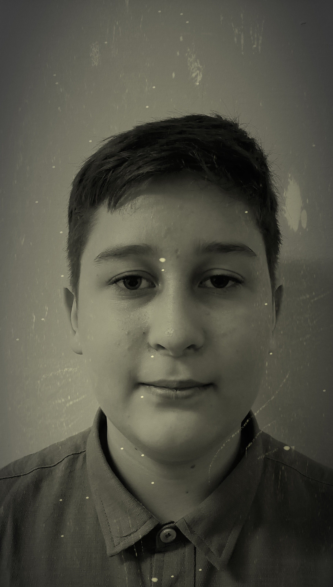

Всем привет. Сегодня мы продолжаем знакомить вас с историей класса и в этом выпуске хотим рассказать о трёх самых влиятельных фигурах 8-го «А». Именно эти люди определяли судьбу класса, вели за собой массы и оставили неизгладимый след в истории школы № 12 города Сарова.
Третье место занимает Марина Джангирашвили. Главный идеолог и стратег, Марина сумела создать вокруг себя мощную сеть сторонниц: Куликова Даша, Кудрявцева Вера и др. Под её влияние так же попал всеми известный "Гаврила" - Сергей Гаврилович. Именно Марина разработала знаменитую «Теорему Минета Хуесосовича» - "Если не знаешь, как делать, делай, как знаешь...". Задолго до восхождения Рыжова, она контролировала информационные потоки класса и была тем серым кардиналом, от которого зависело многое. Её называли «Мариной Медичи» школьного коридора за изощрённую политическую игру. После падения режима она сумела избежать серьёзных последствий, искусно сменив тактику и оставшись в истории как загадочная фигура, до конца не понятая современниками. Ходят слухи, что Марина до сих пор управляет классом из подполья.
Второе место по праву достается Алёне Торбиной - королеве классного кипиша. Мастер по срыванию уроков, стала главным рупором класса. Её острый язык и умение подать любую информацию под нужным для неё углом сделали её незаменимым инструментом влияния. Именно она придумала знаменитый лозунг «Это всё Сухов!» и разработала систему рейтингов популярности, которая десятилетиями определяла иерархию в классе. В отличие от других соратников, Торбина никогда всегда прибегала к открытой конфронтации, предпочитая не работать в тени, дирижируя общественным мнением. Её называли «Турбиной», за что она злилась на Сухова. Поговаривают, что она влюблена в него - своего главного врага.
- Из воспоминаний Л. Г. Мамаевой
И, наконец, первая строчка ожидаемо принадлежит Натану Рыжову. Вождь класса, основоположник движения «Пох, ставьте» и неформальный лидер, приведший коллектив к самой разрушительной войне с учителями. Его имя стало символом одной из самых угарных страниц в истории 8-го «А».

Родившийся в соседнем районе, Рыжов после летних каникул сумел превратить маргинальный кружок по списыванию в мощное школьное движение. Используя популистские лозунги, апелляцию к унижению класса после контрольной по алгебре и антиучительскую риторику, он в 2024 году был законно назначен на пост самого смешного и добродушного человека класса. Всего за несколько месяцев Рыжов установил режим тоталитарной диктатуры в кабинете биологии, уничтожив демократические институты (отменил выборы физорга) и начав массовые репрессии против политических оппонентов, прежде всего отличников.
Идеология и милитаризация: В основе рыжовского мировоззрения лежали «теория о шутках» (смеёшься над его шутками — значит, уважаемый человек), агрессивная неприязнь к психологине и концепция «жизненного похуизма» на территории за третьей партой у окна. Эти идеи легли в основу внутренней и внешней политики. Режим форсированно милитаризировал экономику: сбор макулатуры и накопление фантиков позволили быстро нарастить мощь, несмотря на запреты классного руководителя.
Величайший подвиг: конец 7-го класса, музыка, окончание урока не за горами, но Натану этого было недостаточно, он хотел домой прямо сейчас, поэтому не раздумовая сиганул в окно, и был таков. После приземления герой получил незначительное ранение в виде повреждения ноги, но это не помешало ему скрыться с глаз своих шокированных одноклассников.

Политика: Центральное место в политике Рыжова занимало уничтожение целых групп нервных клеток учителей. Итогом его идеологии стало систематическое преследование около 6 миллионов тгк про Minecraft и Roblox. В школе действовала сеть пропагандических углов, где в идиологию Натана Рыжова были вовлечены многие первоклашки.
Союз: К весне 2024 года Рыжов вместе со своим верным последователем и другом Артёмом Суховым создал Противоалённую коалицию для борьбы с Торбиной Алёной.
- Из протокола классухи
Наследие этих трёх лидеров — это урок о том, к каким катастрофическим последствиям приводят тоталитаризм в отдельно взятом классе, расовая (успеваемостная) нетерпимость и культ личности. Их имена навсегда остались в истории школы как символы разных граней зла: хладнокровного расчёта, коварного слова и Натана.